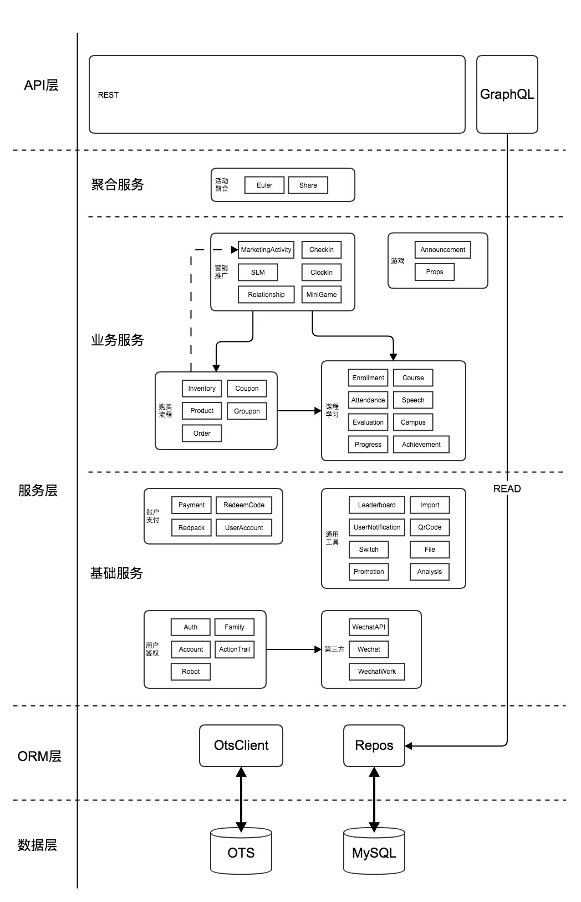

后端架构设计
整体架构

依赖注入
我们使用typedi作为依赖注入框架。
避免使用 constructor 注入
Constructor 注入虽然方便，但在出现循环依赖等复杂情况时灵活性和稳定性不足，所以我们建议大家使用属性注入替代。
// GOOD
@Service()
class ServiceA {
@Inject()
private serviceB: ServiceB;
}
// BAD
@Service()
class ServiceA {
constructor(private serviceB: ServiceB) {}
}
解决循环引用
发生循环引用时，一般可以通过给 @Inject()添加类型回调函数解决，如 @Inject(type => ServiceA)。
需要注意的是，通常循环引用意味着
- 模块间的责任分工不明
- 单个模块的责任过多（非单一责任设计）
- 缺少合理的抽象层
这些问题应该最终通过调整架构设计并重构解决。